JobMatch iPhone 16 Pro Max Mockup Gallery
27 framed screens (17 Job Seeker + 10 Employer) · Captured at 440 × 956 pt @ 3× (1320 × 2868 px raw)
Job Seeker Journey (17 screens)
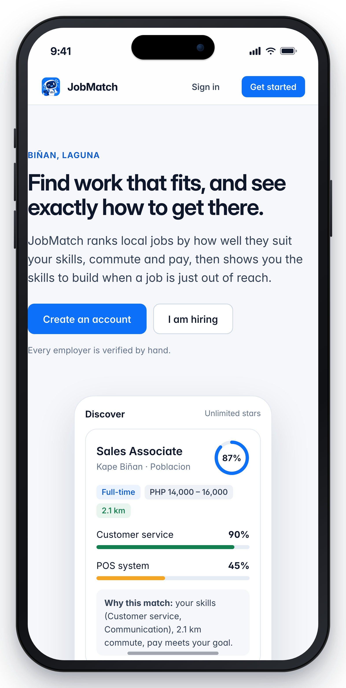
Welcome to JobMatch
Start your job search with transparent match scores built for Biñan and Laguna.
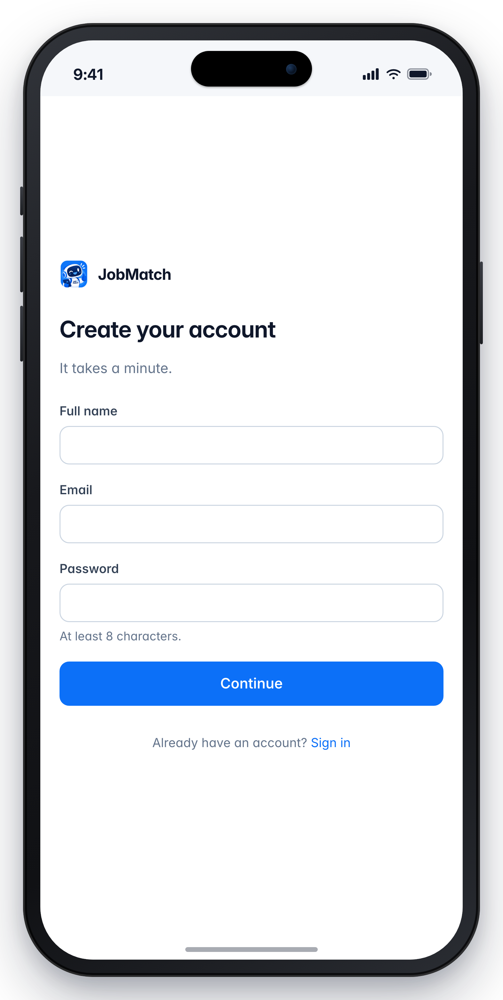
Create your account
Enter your full name, email, and an 8+ character password to create your account.

Choose account type
Pick "I am looking for a job" to start your personal job matching and career plan.
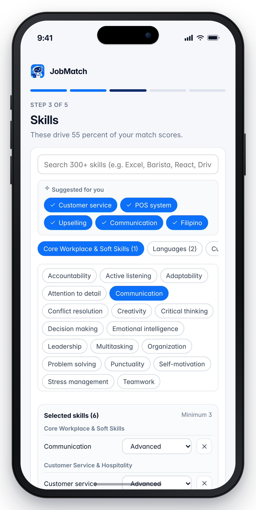
Onboarding – Skills (categorized picker)
Browse 300+ categorized skills, pick Suggested for you, and set your level for each skill.
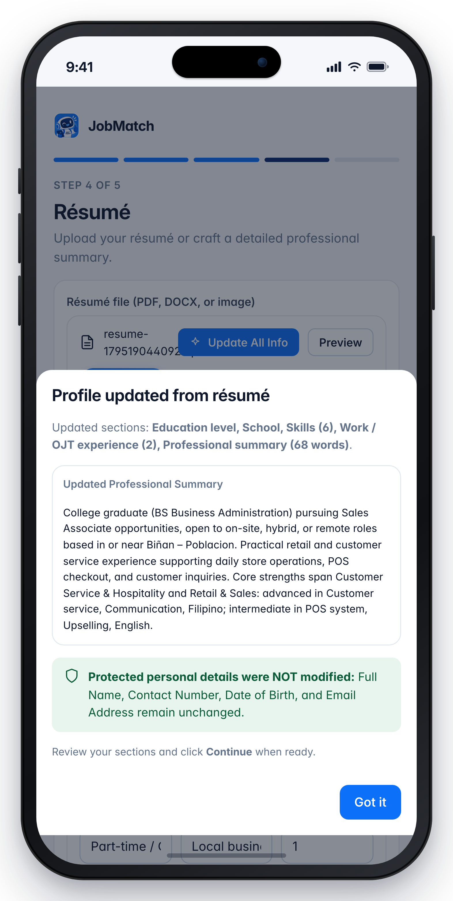
Onboarding – Résumé auto-fill result
Tap Update All Info to auto-fill skills, education, and summary while keeping personal details protected.

Onboarding – Goals & work setups
Pick your target career role, accepted work setups (On-site, Hybrid, Remote), and pay goal.

Your profile
Complete your circular profile photo, 3:4 portrait, and details to reach 100% profile strength.
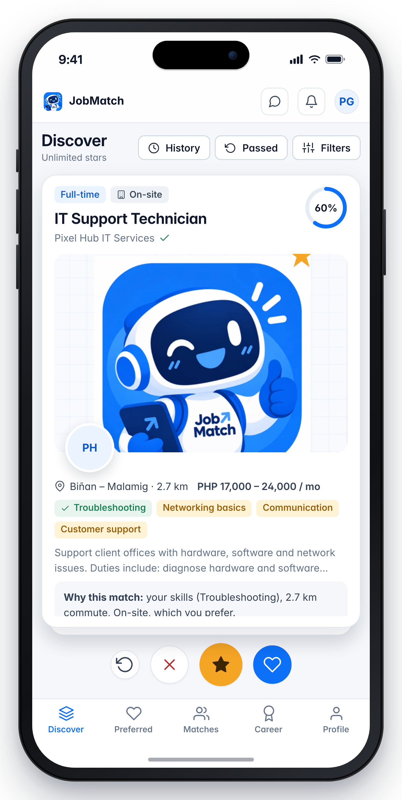
Discover – matched job card
Swipe right to save, left to pass, up to star, or tap any card to see your full match breakdown.

Discover – Filter jobs
Filter jobs by commute limit, work setup (On-site, Hybrid, Remote), employment type, area, and minimum pay.

Upcoming interview on Discover
Scheduled interviews appear at the top of Discover so you can review details and tap Confirm in one tap.

Job details & match breakdown
See exactly how your skills (55%), location (20%), interests (15%), and pay (10%) build your match score.
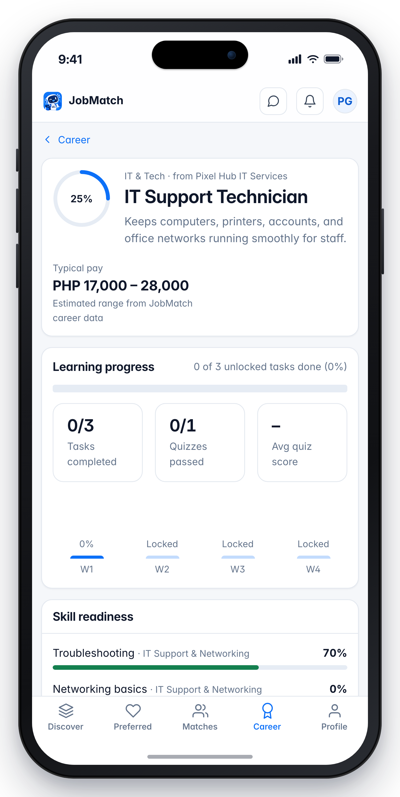
Career breakdown for a job
Check your readiness ring, learning progress, and exact skills needed for any job listing.

Career roadmap & career path
Follow weekly Learn and Practice tasks, pass skill quizzes, and track your Entry-to-Senior career path.
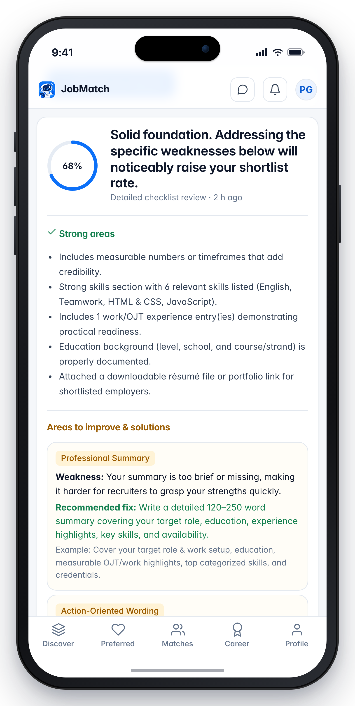
Résumé review results
Get an instant score, strong areas, specific fixes with examples, and employer-appeal tips.
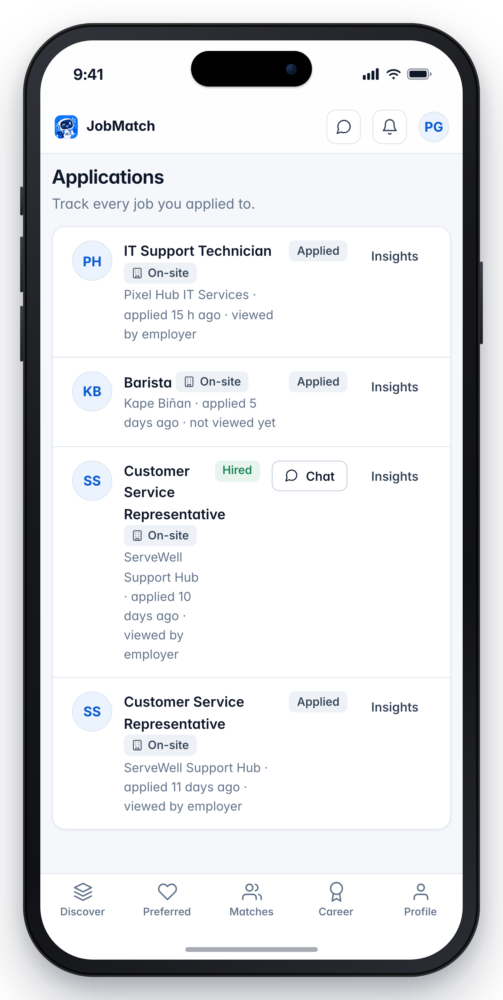
Applications & status timeline
Track every application from Applied to Shortlisted or Hired, plus employer view status and Insights.

Matches – contact details shared
Once shortlisted, employer contact details appear and a direct chat opens.

Messages – long-press options
Press and hold any message to Reply, Copy, Edit, Unsend, or Remove for you.
How Employers Find You (10 screens)

Employer overview dashboard
Employers see live jobs, applicants, matches, views, and upcoming interviews in one dashboard.
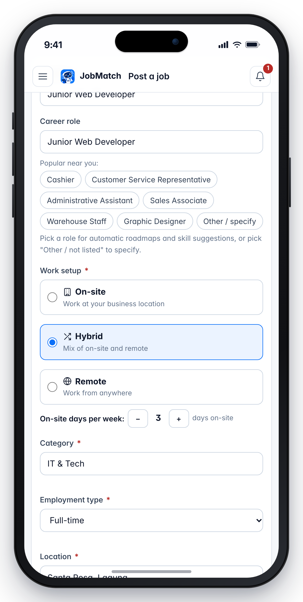
Post a job
Employers pick a career role, work setup (On-site, Hybrid, or Remote), 4:3 photo, and required skills.
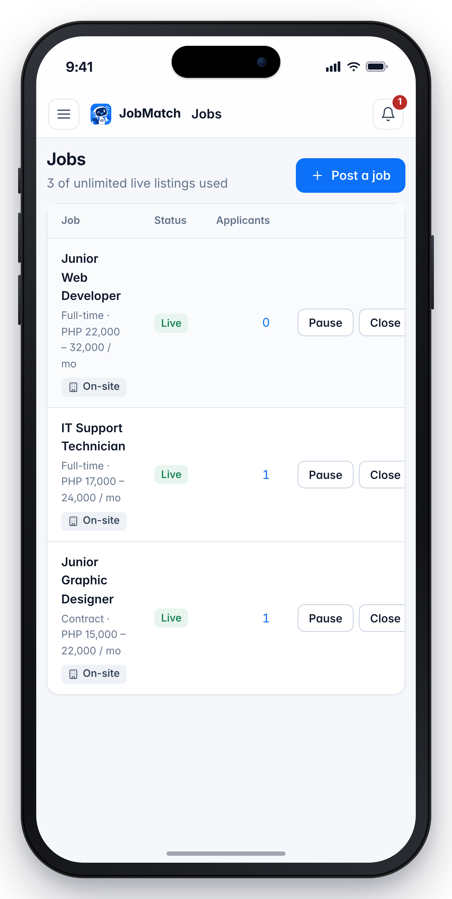
Employer jobs list
Every live listing shows work setup, pay range, status, and total applicant count.

Ranked applicants with match scores
Applicants are ranked by fit with masked names until the employer chooses to shortlist.
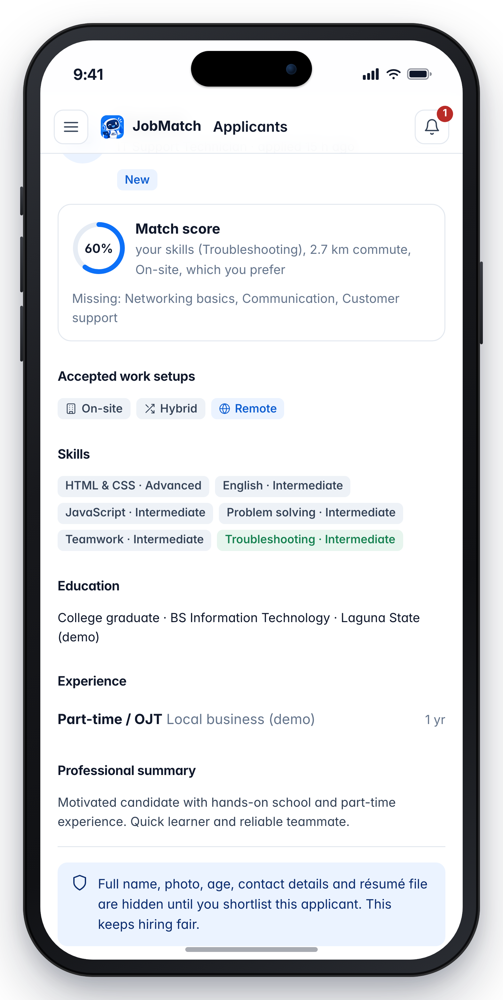
Applicant review drawer
Employers review skills, work setups, education, and summary fairly—contact details appear only after shortlisting.
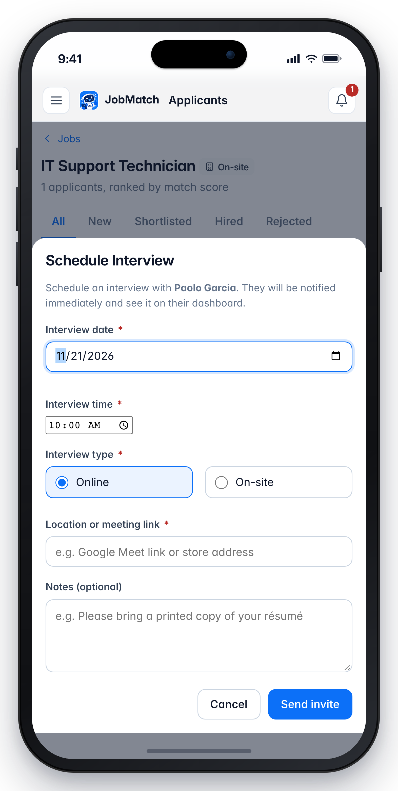
Schedule interview modal
Once shortlisted, employers schedule an Online or On-site interview and send an instant invite.

Candidate search & invites
Employers can discover opted-in seekers matched to their open roles and invite them to apply.
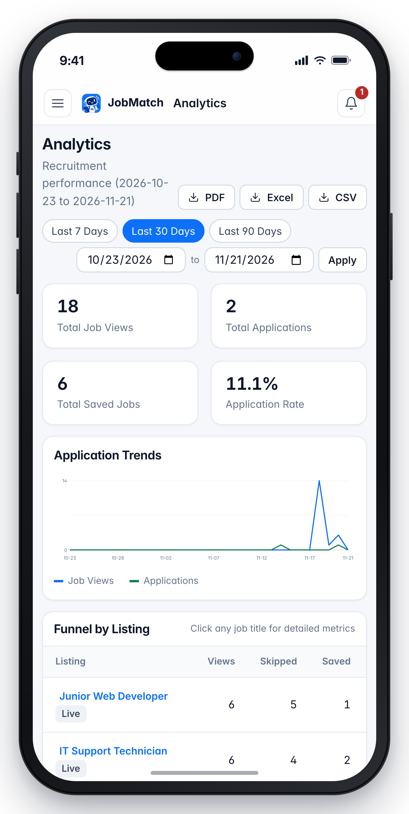
Employer analytics
Hiring trends, views, saves, and application rates help employers improve their job listings.

Verified company profile
Every employer completes document verification to earn the Verified badge shown to seekers.
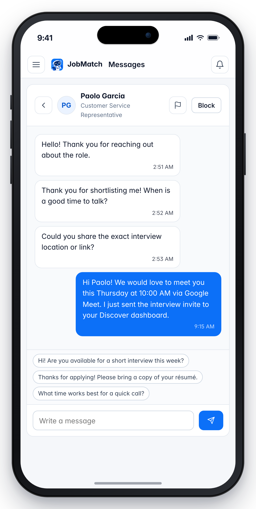
Messages with a candidate
Employers chat directly with shortlisted candidates using quick replies and message tools.